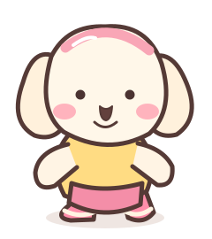

FITBEAT
Move to the Beat! ♪

🌸 Select a Level 🌸
🌷 How to Play
⬅️ LEFT
Tilt your phone left
➡️ RIGHT
Tilt your phone right
⬆️ UP
Lift the phone
🔄 TWIST
Rotate the phone
In this version, use ← → ↑ and Space on your keyboard. Phone sensor readings are available on the Controller page; remote pairing comes next.
⚙ Settings
Use original synthesized beat tones; no external music required.
🌸 Score 0
⏱ 01:00
LEFT
🌸
RIGHT
🌼
UP
🌷
TWIST
🌺
Ready? ♪
COMBO 0
Keyboard: ← → ↑ Space · Move when a flower reaches the bottom ring
🌸 Nice Move! 🌸
Score 0
Perfect 0
Good 0
Miss 0
Max Combo 0